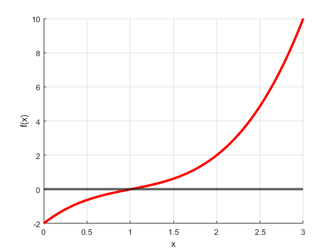

Contents
clear
clc
close all
Define the funtion 2(b)
o = 3;
i = o;
a(:,1) = [1;-3;4;-2];
Newton's Method
maxit = 1000000;
tol = 1e-10;
x0 = 0.5i;
for j = 1 : o
if i == 5
F = @(x) a(1,j)*x^(o+1-j) + a(2,j)*x^(o-j) + a(3,j)*x^(o-1-j) + a(4,j)*x^(o-2-j) + a(5,j)*x^(o-3-j)+ a(6,j)*x^(o-4-j);
Fprime = @(x) (o+1-j)*a(1,j)*x^(o-j) + (o-j)*a(2,j)*x^(o-1-j) + (o-1-j)*a(3,j)*x^(o-2-j) + (o-2-j)*a(4,j)*x^(o-3-j) + (o-3-j)*a(5,j)*x^(o-4-j);
elseif i == 4
F = @(x) a(1,j)*x^(o+1-j) + a(2,j)*x^(o-j) + a(3,j)*x^(o-1-j) + a(4,j)*x^(o-2-j) + a(5,j)*x^(o-3-j);
Fprime = @(x) (o+1-j)*a(1,j)*x^(o-j) + (o-j)*a(2,j)*x^(o-1-j) + (o-1-j)*a(3,j)*x^(o-2-j) + (o-2-j)*a(4,j)*x^(o-3-j);
elseif i == 3
F = @(x) a(1,j)*x^(o+1-j) + a(2,j)*x^(o-j) + a(3,j)*x^(o-1-j) + a(4,j)*x^(o-2-j);
Fprime = @(x) (o+1-j)*a(1,j)*x^(o-j) + (o-j)*a(2,j)*x^(o-1-j) + (o-1-j)*a(3,j)*x^(o-2-j);
elseif i == 2
F = @(x) a(1,j)*x^(o+1-j) + a(2,j)*x^(o-j) + a(3,j)*x^(o-1-j);
Fprime = @(x) (o+1-j)*a(1,j)*x^(o-j) + (o-j)*a(2,j)*x^(o-1-j);
elseif i == 1
F = @(x) a(1,j)*x^(o+1-j) + a(2,j)*x^(o-j);
Fprime = @(x) (o+1-j)*a(1,j)*x^(o-j);
end
[root(j,1),it(j,1),success(j,1)] = newton_exact(F,Fprime,x0,maxit,tol);
for k = 1 : o+1-j
if k == 1
a(k,j+1) = a(k,j);
else
a(k,j+1) = a(k,j) + root(j,1)*a(k-1,j+1);
end
end
i = i - 1;
end
table(root,it,success)
ans =
3×3 table
root it success
____ __ _______
1+0i 6 true
1+1i 6 true
1-1i 1 true
Plot the polynomial
figure
grid on
j = 1;
x = 0:0.01:3;
yline(0,'LineWidth',3)
hold on
if o == 5
plot(x,a(1,j)*x.^(o+1-j) + a(2,j)*x.^(o-j) + a(3,j)*x.^(o-1-j) + a(4,j)*x.^(o-2-j) + a(5,j)*x.^(o-3-j) + a(6,j)*x.^(o-4-j),'r','LineWidth',3);
elseif o ==4
plot(x,a(1,j)*x.^(o+1-j) + a(2,j)*x.^(o-j) + a(3,j)*x.^(o-1-j) + a(4,j)*x.^(o-2-j) + a(5,j)*x.^(o-3-j),'r','LineWidth',3);
elseif o == 3
plot(x,a(1,j)*x.^(o+1-j) + a(2,j)*x.^(o-j) + a(3,j)*x.^(o-1-j) + a(4,j)*x.^(o-2-j),'r','LineWidth',3);
elseif o == 2
plot(x,a(1,j)*x.^(o+1-j) + a(2,j)*x.^(o-j) + a(3,j)*x.^(o-1-j),'r','LineWidth',3);
elseif o == 1
plot(x,a(1,j)*x.^(o+1-j) + a(2,j)*x.^(o-j),'r','LineWidth',3);
end
xlabel('x');
ylabel('f(x)');
